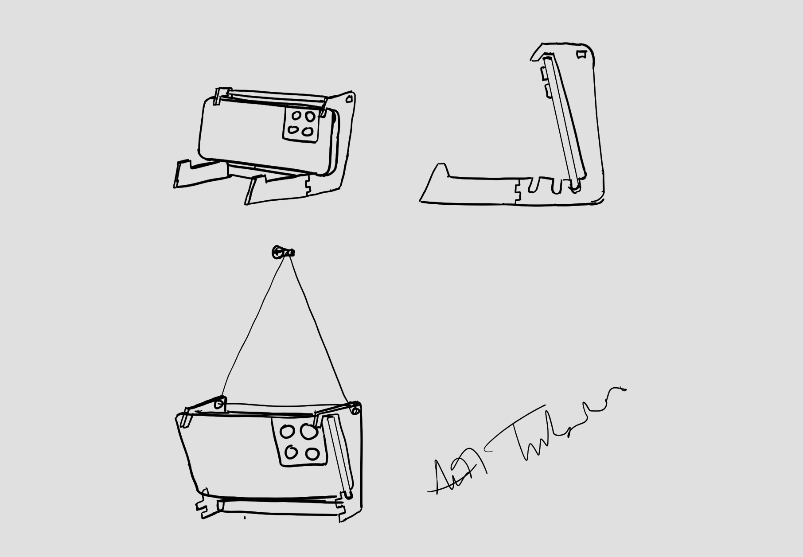
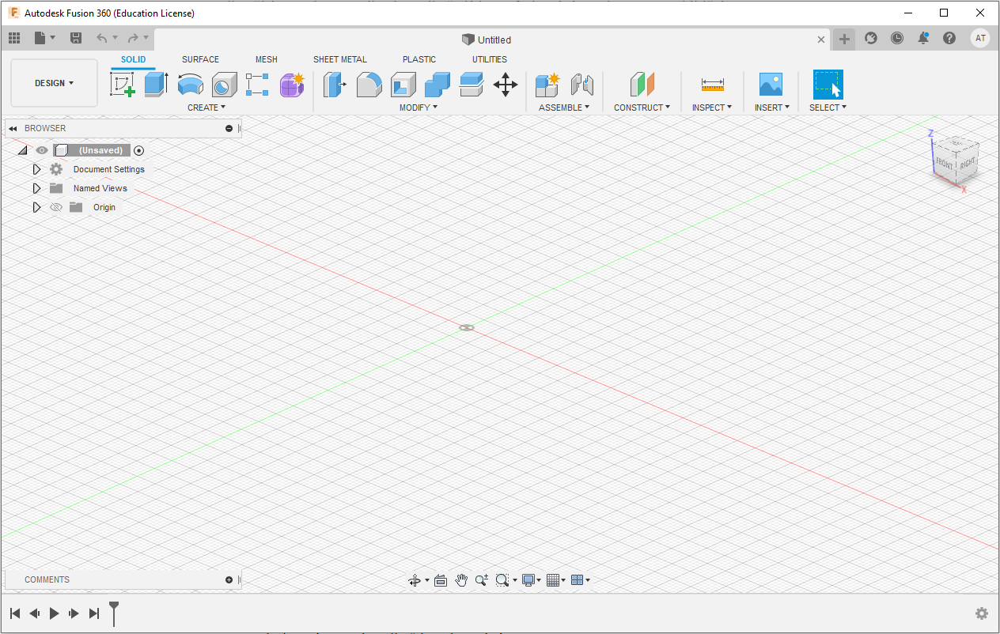
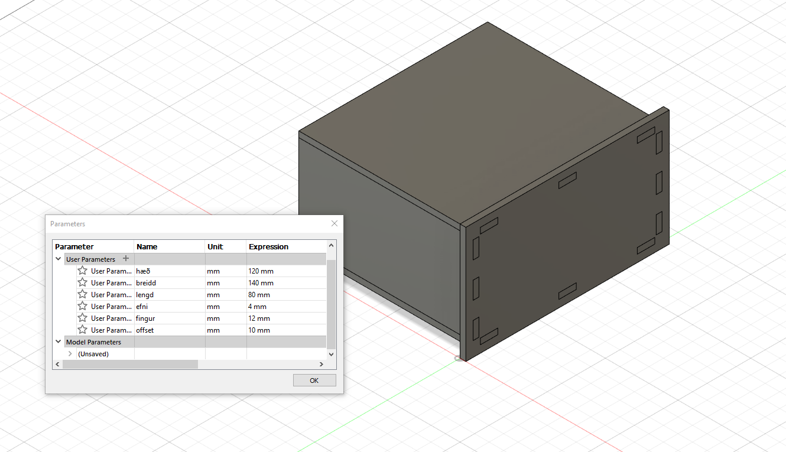
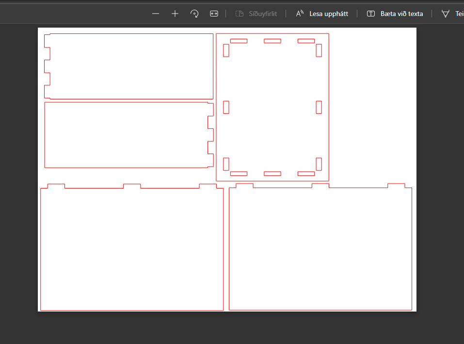
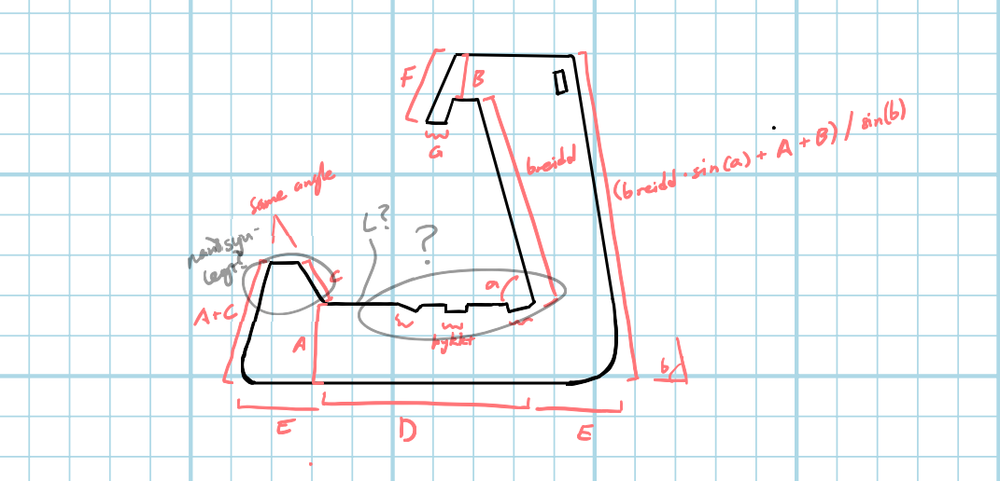
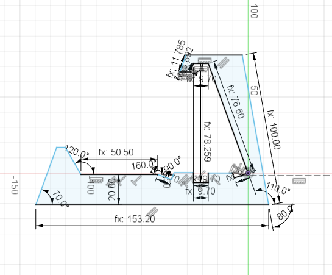
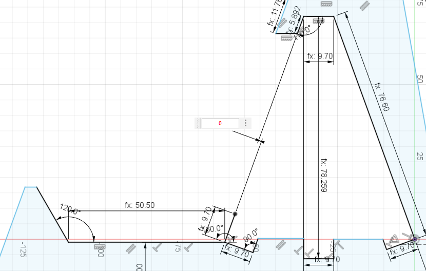
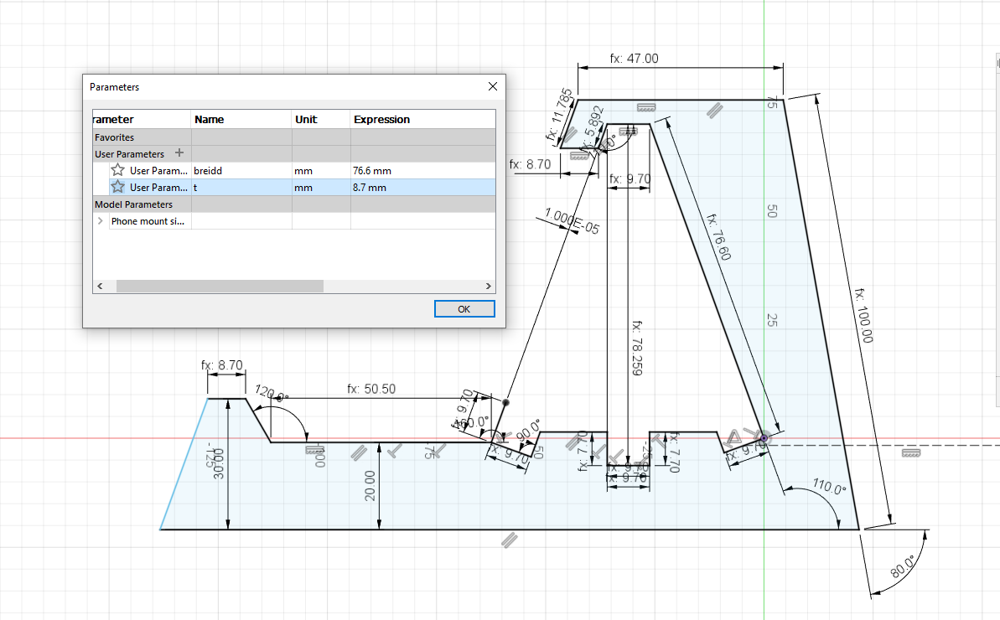
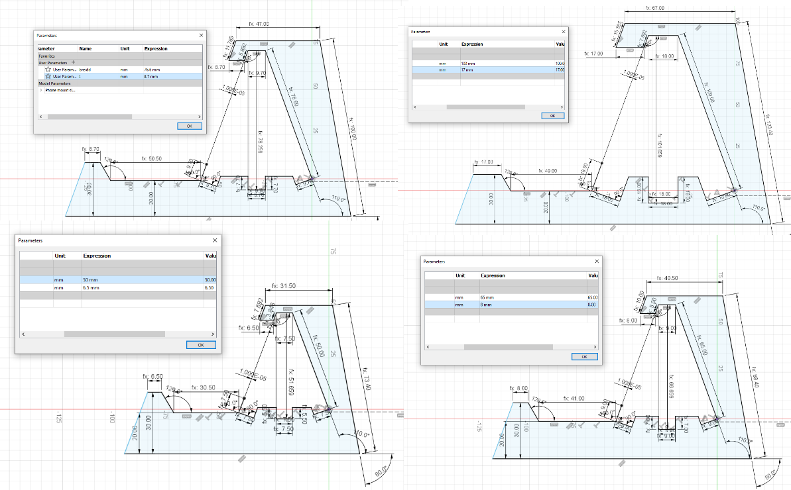
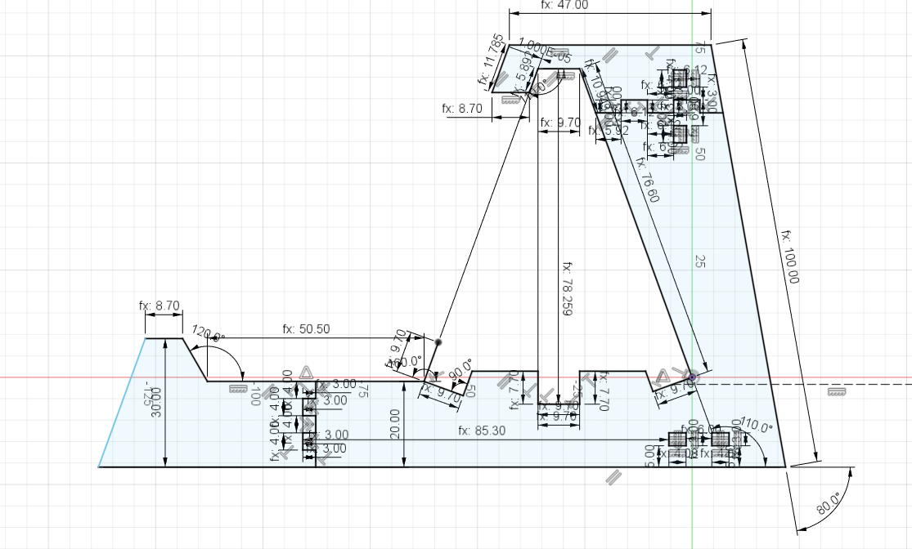

Verkefni 2
Í ætla ég mér að smíða símastand sem er bæði hægt að láta standa á gólfi en einnig hengja á vegg þar sem er skrúfa eða krókur.

Fyrst teiknaði ég upp hugmyndina bara til að sjá betur fyrir mér hvernig varan gæti litið út.

Á þessum tímapunkti verð ég samt að spyrja mig nokkurra spurninga.
- Er hætta á að síminn detti úr þessu?
- Er hægt að stilla standinn þannig að mismunandi símar passi í hann?
- Er standurinn nógu sterkur til að bera þyngd símans?
Oft þegar reynt er að stilla síma upp sjálfur (annaðhvort upp við vegg eða með því að stafla bókum í kring um hann) tekst myndunum ekki að fanga alla senuna og efri helmingur þeirra sýnir bara loftið. Mig langar að síminn standi beint uppréttur og jafnvel halli pínu niður. Án stuðnings fellur síminn væntanlega niður og er því æskilegt að standurinn sé gerður með því öryggi í huga að síminn dettur ei.Ég tel það að standurinn taki mismunandi símastærðum (thats what she said) og tryggi öryggi samtímis (thats what she said!!!!) sé of flókið fyrir stand sem er einungis úr vínyl. Ég ætla mér að hanna standinn eftir mínum eigin síma en svo er hægt fyrir hvern sem er að stilla parametrana þannig að þeirra sími passi.Mér finnst líklegt að standurinn hafi nógu mikla burðargetu til að haldast heill en það er bara mín spá. Næsta skref er að teikna líkanið. Í það notaði ég Fusion 360:

Fyrst horfði ég á eftirfarandi tvö myndbönd sem kennari mælir. Ég hermdi svo eftir myndböndunum í fusion sjálfur:
Og svona voru mínar niðurstöður:


Á þessum tímapunkti í verkefninu get ég byrjað hönnunarferlið mitt. Eins og fram kom efst í greininni er markmiðið að hanna símastand. Fyrst byrja ég á hliðarelementinu þar sem mig grunar að það verði flóknast:

Útfrá teikningunni byrja ég að teikna í Fusion:

Hér sést rosaleg flækja af víddareiningum. Markmiðið mitt er að hanna parametrana þannig að hægt er að slá inn stærðirnar á hvaða síma sem er og líkanið mun passa sig við það. Þetta er hornafræðileg áskorun. Botninn á þessari hlið standsins hefur þrjú innskot þar sem síminn leggst inn. Þau urðu ekki fullkomin í fyrstu tilraun svo ég reyni áframÉg fann mögulegu lausn á allri symmetríunni í þessu líkani. En það er eitt vandamál. Ég þarf að stilla lengdinna milli tveggja lína að hún sé núll, en það virka ekki:

Eftir að leita slatta á netinu fann ég að einfaldasta lausnin er einfaldlega að velja tölu mjög nálægt núlli, svo ég valdi 0.00001. Ég breytti nokkrum víddareiningum að auki og eyddi öðrum. Lokaniðurstaðan var líkan sem hægt er að stilla fyrir allar gerðir af símum

Ég tek fjögur dæmi, fyrsta er síminn minn en svo koma dæmi með stærsta og þykkasta síma allra tíma, minnsta og þynnsta síma í heimi og loks einhvers konar sími sem liggur þar mitt á milli:

Augljóslega passa ekki "allar" símastærði inn í þetta. T.d. sími sem hefur breiddina 74mm og þykktina 0.5 km er einfaldlega ekki að fara að passa í þetta en ég geri líka ráð fyrir því að þannig símar séu ekki til.Nú er hliðarelementið nánast tilbúið. Það eina sem vantar eru finger-joints sem aðskilur efri og neðri helming elementsins, frampartinn auk finger-tenginga sem fara inn í skjáinn í efri og neðri part elementsins.

Ég er mjög ánægður með niðurstöðuna og er einnig búinn að prufa hvort hún passi ekki einnig fyrir allar mögulegu símastærðir. Ég er enn að velta mér fyrir hvort ég eigi að breyta fingurlengdunum eitthvað en núna eru þær 4mm.Í Fusion lítur þetta núna nánast út eins og upplýsingaklessa helvítis en það fylgir einfaldlega því að hafa svona flókinn part. Seinni partarnir tveir verða mun einfaldari.